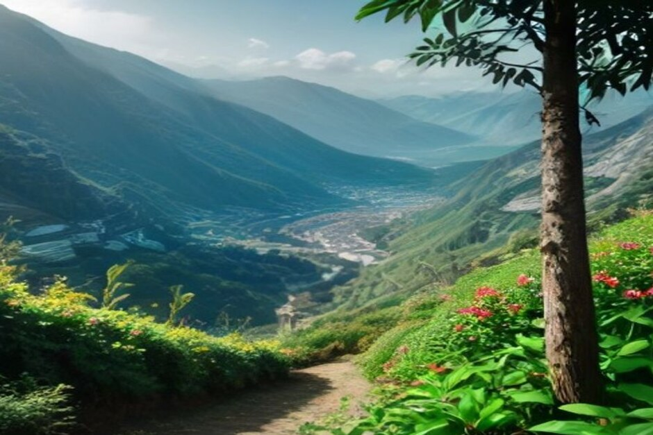
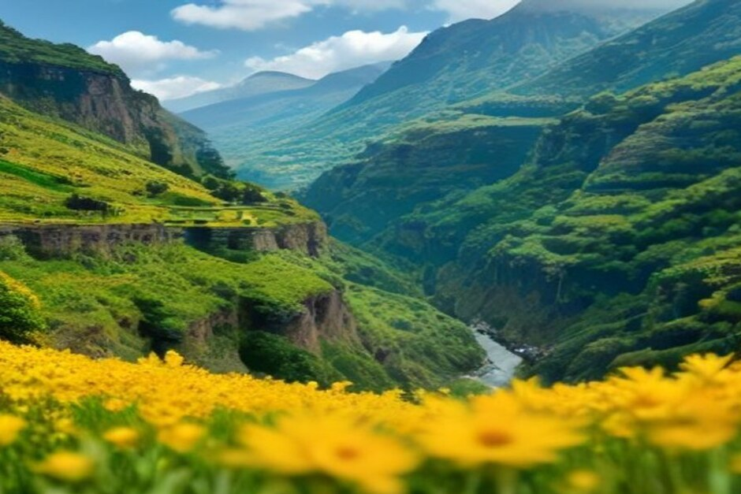

Durante una semana cada octubre, Madeira convierte sus levadas, acantilados y costa en un gran escenario al aire libre. El Nature Festival reúne senderismo guiado, barranquismo, mountain bike y trail running en seis días repartidos por toda la isla — aquí te contamos exactamente cuándo se celebra en 2026, qué actividades incluye y cómo organizar tu visita.
¿Qué es el Madeira Nature Festival?
El Madeira Nature Festival es un evento anual de turismo activo que apuesta por el contacto directo con el entorno natural de la isla. En lugar de una sede única con entrada, se trata de un programa descentralizado de actividades guiadas — senderismo, barranquismo, mountain bike, trail running y más — organizadas por operadores de turismo activo registrados en distintos puntos del archipiélago, pensado tanto para residentes como para visitantes. La idea es empaquetar el patrimonio natural de la isla igual que un festival gastronómico empaqueta la cocina de una región: concentrado en una semana, con un programa público en lugar de tener que buscar operadores uno por uno.
¿Cuándo es el Madeira Nature Festival en 2026?
La edición 2026 se celebra del 6 al 11 de octubre, dentro de esa temporada media en la que ya han bajado las multitudes del verano pero el tiempo en las montañas todavía no se ha vuelto impredecible. Aparece en el calendario oficial de eventos de Visit Madeira junto a las demás citas otoñales de la isla, así que conviene consultar directamente ese listado más cerca de la fecha para conocer el programa confirmado lugar por lugar.

¿Qué actividades incluye el festival?
El programa principal abarca senderismo guiado, barranquismo, mountain bike y trail running, las actividades más asociadas al interior de Madeira. Para 2026, los organizadores han añadido un apartado de bienestar junto a los deportes de aventura habituales, además de un impulso por combinar el turismo activo con gastronomía, enoturismo y música en directo — así, una sesión de barranquismo por la mañana puede compartir el programa del día con una cata o un concierto por la tarde en los alrededores.
¿Dónde se celebra?
A diferencia de un festival construido alrededor de una plaza o un escenario, el Nature Festival se desarrolla en múltiples puntos de la isla, con distintos municipios organizando su propia parte del programa a lo largo de la semana. Ese reparto es deliberado: atrae a los visitantes hacia parroquias y puntos de partida de rutas que de otro modo podrían pasar por alto en favor de los miradores más famosos, algo muy coherente con un evento pensado para mostrar el patrimonio natural de Madeira y no una sola foto de postal.
¿Hay que reservar y es gratis?
Las normas de reserva dependen de la actividad. Algunas charlas, demostraciones y presentaciones son gratuitas y abiertas al público, pero las actividades guiadas al aire libre — las rutas de senderismo, barranquismo y bicicleta que componen la mayor parte del programa — se organizan a través de operadores registrados y se reservan y pagan de forma individual, exactamente igual que fuera de la semana del festival. Como las plazas en las sesiones guiadas son limitadas, conviene consultar el calendario oficial de eventos de Visit Madeira en cuanto se publique el programa detallado y reservar con antelación en lugar de presentarse el mismo día.

¿Es octubre una buena época para visitar Madeira?
Sí — octubre es uno de los mejores meses para combinar tierra y mar en la isla. El Atlántico conserva el calor del verano, las multitudes de temporada alta en las rutas principales ya se han reducido, y el tiempo en las montañas suele mantenerse lo bastante estable para una semana entera de senderismo guiado, sin las lluvias que pueden llegar a partir de diciembre. Además, en la costa hace la temperatura suficiente para que el baño y los paseos en barco sigan estando en plena temporada.
¿Se puede combinar el festival con un paseo en barco desde Funchal?
Sin problema. Todo el programa del Nature Festival transcurre en tierra, así que el mar queda completamente libre — y Chifbay organiza paseos en barco privado desde la Marina do Funchal durante todo octubre, de modo que una mañana de ruta o una sesión de barranquismo combina de forma natural con una tarde de paseo en barco privado por la misma costa. Reserva el Day Trip con Cabo Girão, paradas para bañarte y grabación con drone, o el Sunset Trip para cerrar un día de senderismo con copas a bordo mientras cae la luz.
El festival te muestra la naturaleza de Madeira desde dentro. El barco te muestra la misma isla desde fuera, mirando hacia atrás.
Sea lo que reserves, comprueba el programa confirmado de 2026 en el calendario oficial de eventos antes de viajar: las fechas y operadores de cada lugar suelen cerrarse más cerca de octubre, y las sesiones más populares se agotan antes.